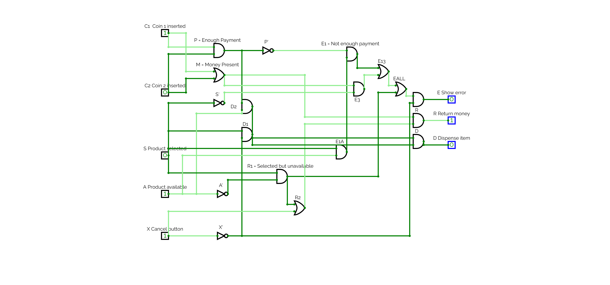
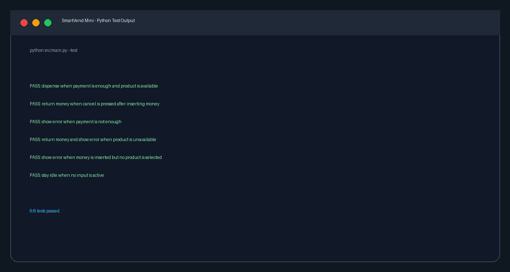

SmartVend Mini
Simple Vending Machine Logic
EEE120 Digital Design Fundamentals
Instructor: Dr. Rajan Tirpathi
Team: Unarov Ahrorbek, Temur Aliyev, Islom Raxmanov, Shaxzodbek Turabidinov, Soliha Xolova
Our project shows how basic digital gates can control a real practical system: a vending machine that decides when to dispense, return money, or show an error.
Problem And Relevance
Problem
A vending machine must make a reliable decision from simple yes/no signals. If the logic is wrong, it may give a product without payment, keep the user's money, or fail to show a useful error.
Our design solves this with clear digital rules that can be tested using a truth table.
Why It Matters
- Retail automation uses the same kind of decision logic.
- Embedded systems often read simple input signals and produce output actions.
- Payment systems must be predictable and easy to test.
- The same idea can extend to ticket machines, lockers, and access systems.
System Overview
Five Inputs
Coin 1 inserted
Coin 2 inserted
Product selected
Product available
Cancel button
Three Outputs
Dispense item
Return money
Show error
Digital Logic Design
Intermediate Signals
The product price is two coins, so both coin inputs must be active for enough payment.
P = C1 . C2 M = C1 + C2
P means enough payment. M means at least one coin is present.
Output Equations
D = X' . S . A . P
R = M . (X + S . A')
E = X' . [(S . A . P')
+ (S . A') + (S' . M)]
Decision Table
This table summarizes the main truth-table behavior. The complete truth table is included in the GitHub repository as docs/truth_table.csv.
| Situation | Input condition | D | R | E | Meaning |
|---|---|---|---|---|---|
| Correct purchase | C1=1, C2=1, S=1, A=1, X=0 | 1 | 0 | 0 | Release item |
| Not enough payment | S=1, A=1, P=0, X=0 | 0 | 0 | 1 | Ask for more payment |
| Product unavailable | S=1, A=0, X=0 | 0 | 1 if money exists | 1 | Do not dispense unavailable item |
| Cancel with money | M=1, X=1 | 0 | 1 | 0 | Return inserted money |
| Idle | No money and no selected product | 0 | 0 | 0 | Wait for user |
CircuitVerse Implementation

What The Circuit Contains
- 5 labeled inputs and 3 labeled outputs.
- 18 total gates: 10 AND, 4 OR, and 4 NOT gates.
- Intermediate signals for enough payment and money present.
- Separate logic paths for dispense, return money, and error.
- The corrected circuit was checked against all 32 input combinations.
Testing And Results
We tested important real-world situations in both CircuitVerse and Python. The Python version also checks the same logic automatically.
Result: The corrected CircuitVerse design matches the Boolean equations for all 32 possible input combinations.
Python Prototype
Software Features
- Console menu for user input.
- Uses the same Boolean equations as the circuit.
- Displays intermediate signals
PandM. - Prints final outputs
D,R, andE. - Includes a truth table option and built-in test cases.
Code file: src/main.py

python src/main.py --test 6/6 tests passed.
Teamwork And AI Usage
Team Roles
AI Helped With
- Organizing the project idea.
- Drafting equations and test cases.
- Creating a Python prototype.
- Improving README and presentation wording.
What We Checked
- We tested the CircuitVerse circuit.
- We compared the logic with the Python program.
- We reviewed what each input, gate, and output means.
Conclusion And Future Improvement
Conclusion
- The vending machine logic works using basic gates.
- The CircuitVerse design and Python program follow the same decision rules.
- The project connects EEE120 concepts to a practical embedded-system example.
- Testing showed the corrected circuit handles normal, cancel, unavailable, and error cases.
Future Work
- Add different products with different prices.
- Add memory for inserted money and product inventory.
- Add a counter or state machine for Idle, Money Inserted, Dispense, and Return states.
- Add a seven-segment display for price, stock, or error code.